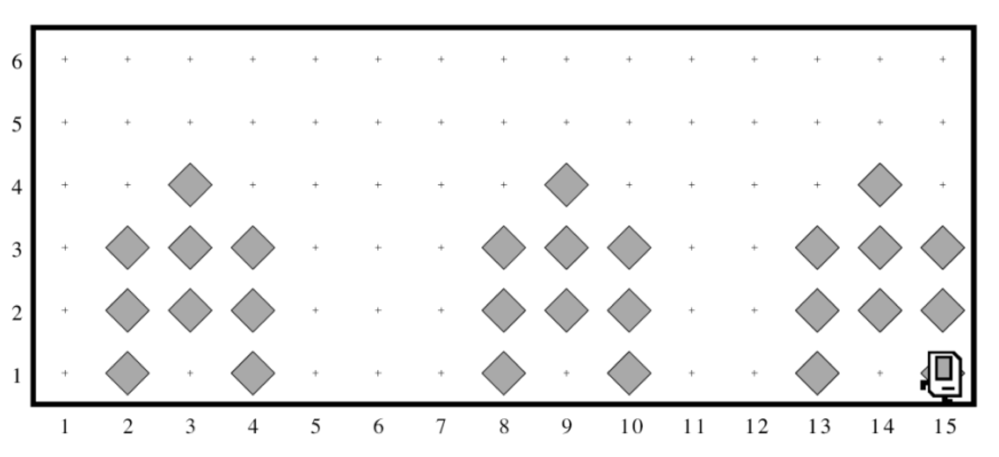

Hoja informativa 1¶
Karel de las Naciones Unidas¶
Para reconstruir la infraestructura del mundo, las Naciones Unidas - es cierto, la ONU utiliza Karel - estableció un nuevo programa con la intención de enviar robots de construcción de viviendas para reparar áreas dañadas por las inundaciones.
Su trabajo es programar esos robots.
Cada robot empieza en el extremo oeste de una calle que podría verse así:

Cada bíper en la figura representa una montaña de escombros. Karel tendrá que andar por la calle y construir una casita nueva en los lugares marcados por cada bíper. Esas casas, además, tienen que ser levantadas sobre pilotes para evitar dañarse durante la próxima inundación. Cada casa, de hecho, debe verse exactamente como la siguiente imagen:

La nueva casa debe estar centrada en el punto en el que quedaron los restos, lo que significa que la primera casa en el diagrama anterior se construirá con su borde izquierdo a lo largo de la 2a avenida. Al final de la ejecución, Karel debería estar en el extremo este de la calle, habiendo creado un conjunto de casas que se vean así para las condiciones iniciales mostradas:
{kind=link}
Tenga en cuenta la siguiente información sobre el mundo:
Karel comienza frente al este en la posición (1, 1) con un número infinito de bíperes en su bolsa.
Los bíperes que indican las posiciones en las que se deben construir las casas estarán espaciados para que haya espacio para construir las casas sin superponerse o chocar con las paredes.
Karel debe terminar de cara al este en la esquina sureste del mundo. Además, Karel no debería chocarse con una pared si construye una casa que se extienda hasta aquella esquina final.
Escriba un programa para implementar el proyecto Karel de las Naciones Unidas. Recuerde que su programa debería funcionar para cualquier mundo que cumpla con las condiciones anteriores.